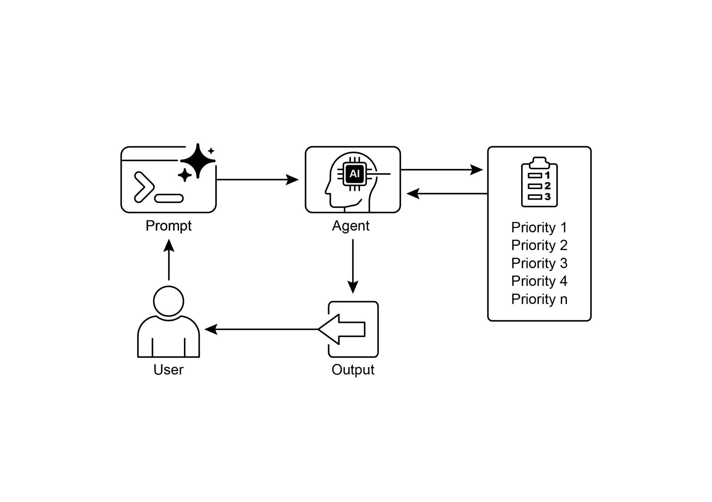

读书 · Agentic Design Patterns · 中英对照
第 20 章 · 优先级排序 Prioritization
Chapter 20: Prioritization · 《Agentic Design Patterns》 · Antonio Gulli · 2025
讲智能体如何在多任务、资源受限时按紧迫性、重要性与依赖关系排序并动态调整。
← 返回导读 原书 PDF · 第323页起 上一章:第19章 下一章:第21章
本章要点
① 定义准则：紧迫性、重要性、依赖、资源与成本收益 ① 任务评估可用简单规则或LLM打分推理 ① 调度选择决定下一步动作或任务序列 ① 动态重优先级化让智能体实时调整焦点
本章一图流
定准则紧迫、重要、依赖、成本收益→评任务规则或LLM打分推理→选调度定下一步动作或序列→动态重排实时调整焦点与顺序
智能体在资源受限下按准则评分排序，选出下一步并随环境动态重排。
原书插图

本章划线句
划线句(逐字校验)
"The prioritization pattern addresses this issue by enabling agents to assess and rank tasks, objectives, or actions based on their significance, urgency, dependencies, and established criteria."
为什么值得划线:一句话概括该模式的定义与核心维度。
划线句(逐字校验)
"A key feature of this agentic behavior is dynamic re-prioritization, which grants the agent the autonomy to adapt its focus in real-time as conditions change."
为什么值得划线:点出智能体区别于脚本的关键能力。
划线句(逐字校验)
"This ability to self-manage its workflow is what separates a true agentic system from a simple automated script."
为什么值得划线:强调自主管理工作流是智能体本质。
正文(英中对照)
第20章：优先级排序（Prioritization） Chapter 20: Prioritization
"In complex, dynamic environments, Agents frequently encounter numerous potential actions, conflicting goals, and limited resources. Without a defined process for determining the subsequent action, the agents may experience reduced efficiency, operational delays, or failures to achieve key objectives. The prioritization pattern addresses this issue by enabling agents to assess and rank tasks, objectives, or actions based on their significance, urgency, dependencies, and established criteria. This ensures the agents concentrate efforts on the most critical tasks, resulting in enhanced effectiveness and goal alignment."
在复杂、动态的环境中，Agent（智能体）经常面临大量潜在动作、相互冲突的目标以及有限资源。如果没有一个明确的过程来决定后续动作，Agent 可能会效率下降、运行延迟，或无法实现关键目标。优先级排序模式（prioritization pattern）通过让 Agent 依据重要性、紧迫性、依赖关系和既定标准来评估并排序任务、目标或动作，从而解决这一问题。这确保 Agent 将精力集中在最关键的任务上，从而提升有效性并实现目标一致性。
导读注:复杂环境中，优先级排序模式让 Agent 按重要性、紧迫性等排序任务，避免效率下降。
"Prioritization Pattern Overview Agents employ prioritization to effectively manage tasks, goals, and sub-goals, guiding subsequent actions. This process facilitates informed decision-making when addressing multiple demands, prioritizing vital or urgent activities over less critical ones. It is particularly relevant in real-world scenarios where resources are constrained, time is limited, and objectives may conflict. The fundamental aspects of agent prioritization typically involve several elements. First, criteria definition establishes the rules or metrics for task evaluation."
优先级模式概述 智能体(Agent)采用优先级排序来有效管理任务、目标和子目标,指导后续行动。这一过程有助于在应对多重需求时做出明智决策,将重要或紧急的活动置于不太关键的活动之上。它在资源受限、时间有限且目标可能冲突的现实场景中尤为相关。智能体优先级排序的基本方面通常涉及若干要素。首先,标准定义确立了任务评估的规则或指标。
导读注:点出优先级排序的核心:标准定义是任务评估的起点。
"These may include urgency (time sensitivity of the task), importance (impact on the primary objective), dependencies (whether the task is a prerequisite for others), resource availability (readiness of necessary tools or information), cost/benefit analysis (effort versus expected outcome), and user preferences for personalized agents. Second, task evaluation involves assessing each potential task against these defined criteria, utilizing methods ranging from simple rules to complex scoring or reasoning by LLMs. Third, scheduling or selection logic refers to the algorithm that, based on the evaluations, selects the optimal next action or task sequence, potentially utilizing a queue or an advanced planning component."
这些可能包括紧迫性（任务的时间敏感性）、重要性（对主要目标的影响）、依赖性（任务是否为其他任务的前提条件）、资源可用性（必要工具或信息的就绪程度）、成本/效益分析（投入与预期结果的对比），以及个性化 agent 的用户偏好。其次，任务评估涉及依据这些既定标准对每个潜在任务进行评估，所用方法从简单规则到复杂评分或由 LLM 进行推理不等。第三，调度或选择逻辑是指基于评估结果选择最优下一步行动或任务序列的算法，可能利用队列或高级规划组件。
导读注:揭示 agent 任务优先级决策的三层机制：评估标准、评估方法、调度逻辑。
"Finally, dynamic re-prioritization allows the agent to modify priorities as circumstances change, such as the emergence of a new critical event or an approaching deadline, ensuring agent adaptability and responsiveness. Prioritization can occur at various levels: selecting an overarching objective (high-level goal prioritization), ordering steps within a plan (sub-task prioritization), or choosing the next immediate action from available options (action selection). Effective prioritization enables agents to exhibit more intelligent, efficient, and robust behavior, 1 especially in complex, multi-objective environments. This mirrors human team organization, where managers prioritize tasks by considering input from all members."
最后，动态重优先级排序（dynamic re-prioritization）使智能体（agent）能够随着情况变化（例如出现新的关键事件或截止日期临近）修改优先级，从而确保智能体的适应性与响应能力。优先级排序可以在多个层面进行：选择总体目标（高层目标优先级排序）、在计划内对步骤排序（子任务优先级排序），或从可用选项中挑选下一个即时动作（动作选择）。有效的优先级排序使智能体能够表现出更智能、高效且鲁棒的行为，尤其是在复杂的多目标环境中。这类似于人类团队组织，管理者通过考虑所有成员的输入来为任务排定优先级。
导读注:点出动态重优先级排序的三个层面及其对多目标环境智能体行为的意义。
"Practical Applications & Use Cases In various real-world applications, AI agents demonstrate a sophisticated use of prioritization to make timely and effective decisions. ● Automated Customer Support: Agents prioritize urgent requests, like system outage reports, over routine matters, such as password resets. They may also give preferential treatment to high-value customers. ● Cloud Computing: AI manages and schedules resources by prioritizing allocation to critical applications during peak demand, while relegating less urgent batch jobs to off-peak hours to optimize costs. ● Autonomous Driving Systems: Continuously prioritize actions to ensure safety and efficiency."
实际应用与用例 在各种真实世界的应用中，AI agent（智能体）展示了优先级排序的复杂运用，以做出及时有效的决策。● 自动化客户支持：智能体优先处理紧急请求，如系统故障报告，而非密码重置等常规事项。它们也可能对高价值客户给予优先待遇。● 云计算：AI 通过优先向关键应用分配资源来管理和调度资源，在需求高峰期间如此，同时将不太紧急的批处理作业推迟到非高峰时段以优化成本。● 自动驾驶系统：持续优先处理各项行动以确保安全与效率。
导读注:展示 AI agent 如何用优先级排序在客服、云资源调度与自动驾驶中做及时决策。
"For example, braking to avoid a collision takes precedence over maintaining lane discipline or optimizing fuel efficiency. ● Financial Trading: Bots prioritize trades by analyzing factors like market conditions, risk tolerance, profit margins, and real-time news, enabling prompt execution of high-priority transactions. ● Project Management: AI agents prioritize tasks on a project board based on deadlines, dependencies, team availability, and strategic importance. ● Cybersecurity: Agents monitoring network traffic prioritize alerts by assessing threat severity, potential impact, and asset criticality, ensuring immediate responses to the most dangerous threats. ● Personal Assistant AIs: Utilize prioritization to manage daily lives, organizing calendar events, reminders, and notifications according to user-defined importance, upcoming deadlines, and current context."
例如，为避免碰撞而刹车优先于保持车道纪律或优化燃油效率。● 金融交易：机器人通过分析市场状况、风险承受能力、利润率与实时新闻等因素来对交易进行优先级排序，从而实现高优先级交易的即时执行。● 项目管理：AI agent（智能体）根据截止日期、依赖关系、团队可用性与战略重要性，对项目看板上的任务进行优先级排序。● 网络安全：监控网络流量的 agent 通过评估威胁严重性、潜在影响与资产关键性来对告警进行优先级排序，确保对最危险的威胁立即响应。● 个人助理 AI：利用优先级排序来管理日常生活，依据用户定义的重要性、即将到来的截止日期与当前情境来组织日历事件、提醒与通知。
导读注:以刹车让行说明优先级排序是智能体跨领域通用的核心能力。
"These examples collectively illustrate how the ability to prioritize is fundamental to the enhanced performance and decision-making capabilities of AI agents across a wide spectrum of situations. Hands-On Code Example The following demonstrates the development of a Project Manager AI agent using LangChain. This agent facilitates the creation, prioritization, and assignment of tasks 2 to team members, illustrating the application of large language models with bespoke tools for automated project management."
这些示例共同说明了优先级排序能力是 AI agent（人工智能代理）在广泛情境中提升性能与决策能力的根本所在。动手代码示例 以下演示了使用 LangChain 开发一个 Project Manager AI agent 的过程。该 agent 支持任务的创建、优先级排序以及向团队成员分配任务 2，展示了将大型语言模型（LLM）与定制工具结合用于自动化项目管理的应用。
导读注:强调优先级排序是 agent 能力核心，并引出 LangChain 实战示例。
python
import os
import asyncio
from typing import List, Optional, Dict, Typepython
from dotenv import load_dotenv
from pydantic import BaseModel, Fieldpython
from langchain_core.prompts import ChatPromptTemplate
from langchain_core.tools import Tool
from langchain_openai import ChatOpenAI
from langchain.agents import AgentExecutor, create_react_agent
from langchain.memory import ConversationBufferMemorypython
# --- 0. Configuration and Setup -- # Loads the OPENAI_API_KEY from the .env file.
load_dotenv()"# The ChatOpenAI client automatically picks up the API key from the environment. llm = ChatOpenAI(temperature=0.5, model="gpt-4o-mini")"
ChatOpenAI 客户端会自动从环境变量中读取 API key。llm = ChatOpenAI(temperature=0.5, model="gpt-4o-mini")
导读注:注意 ChatOpenAI 自动读取环境变量中的 API key，无需显式传入。
python
# --- 1. Task Management System --
class Task(BaseModel):
"""Represents a single task in the system."""
id: str
description: str
priority: Optional[str] = None # P0, P1, P2
assigned_to: Optional[str] = None # Name of the workerpython
class SuperSimpleTaskManager:
"""An efficient and robust in-memory task manager."""
def __init__(self):
# Use a dictionary for O(1) lookups, updates, and deletions.
self.tasks: Dict[str, Task] = {}
self.next_task_id = 1python
def create_task(self, description: str) -> Task:
"""Creates and stores a new task."""
task_id = f"TASK-{self.next_task_id:03d}"
new_task = Task(id=task_id, description=description)
self.tasks[task_id] = new_task
self.next_task_id += 1python
print(f"DEBUG: Task created - {task_id}: {description}")
return new_taskpython
def update_task(self, task_id: str, **kwargs) -> Optional[Task]:
"""Safely updates a task using Pydantic's model_copy."""
task = self.tasks.get(task_id)
if task:
# Use model_copy for type-safe updates.
update_data = {k: v for k, v in kwargs.items() if v is not
None}
updated_task = task.model_copy(update=update_data)
self.tasks[task_id] = updated_task
print(f"DEBUG: Task {task_id} updated with {update_data}")
return updated_taskpython
print(f"DEBUG: Task {task_id} not found for update.")
return Nonepython
def list_all_tasks(self) -> str:
"""Lists all tasks currently in the system."""
if not self.tasks:
return "No tasks in the system."python
task_strings = []
for task in self.tasks.values():
task_strings.append(
f"ID: {task.id}, Desc: '{task.description}', "
f"Priority: {task.priority or 'N/A'}, "
f"Assigned To: {task.assigned_to or 'N/A'}"
)
return "Current Tasks:\n" + "\n".join(task_strings)"task_manager = SuperSimpleTaskManager()"
task_manager = SuperSimpleTaskManager()
导读注:代码行原样保留，展示任务管理器实例化。
python
# --- 2. Tools for the Project Manager Agent --
# Use Pydantic models for tool arguments for better validation and
clarity.
class CreateTaskArgs(BaseModel):
description: str = Field(description="A detailed description of
the task.")python
class PriorityArgs(BaseModel):
task_id: str = Field(description="The ID of the task to update,
e.g., 'TASK-001'.")
priority: str = Field(description="The priority to set. Must be
one of: 'P0', 'P1', 'P2'.")python
class AssignWorkerArgs(BaseModel):
task_id: str = Field(description="The ID of the task to update,
e.g., 'TASK-001'.")
worker_name: str = Field(description="The name of the worker to
assign the task to.")python
def create_new_task_tool(description: str) -> str:
"""Creates a new project task with the given description."""
task = task_manager.create_task(description)
return f"Created task {task.id}: '{task.description}'."python
def assign_priority_to_task_tool(task_id: str, priority: str) -> str:
"""Assigns a priority (P0, P1, P2) to a given task ID."""
if priority not in ["P0", "P1", "P2"]:
return "Invalid priority. Must be P0, P1, or P2."
task = task_manager.update_task(task_id, priority=priority)
return f"Assigned priority {priority} to task {task.id}." if task
else f"Task {task_id} not found."python
def assign_task_to_worker_tool(task_id: str, worker_name: str) ->
str:
"""Assigns a task to a specific worker."""
task = task_manager.update_task(task_id, assigned_to=worker_name)
return f"Assigned task {task.id} to {worker_name}." if task else
f"Task {task_id} not found.""# All tools the PM agent can use pm_tools = [ Tool( name="create_new_task", func=create_new_task_tool, description="Use this first to create a new task and get its ID.", args_schema=CreateTaskArgs ), Tool( name="assign_priority_to_task", func=assign_priority_to_task_tool, description="Use this to assign a priority to a task after it has been created.", args_schema=PriorityArgs ), Tool( name="assign_task_to_worker", func=assign_task_to_worker_tool, description="Use this to assign a task to a specific worker 5 after it has been created.", args_schema=AssignWorkerArgs ), Tool( name="list_all_tasks", func=task_manager.list_all_tasks, description="Use this to list all current tasks and their status." ), ] # --- 3."
# PM agent 可使用的所有工具
pm_tools = [
Tool(
name="create_new_task",
func=create_new_task_tool,
description="首先使用此工具创建新任务并获取其 ID。",
args_schema=CreateTaskArgs
),
Tool(
name="assign_priority_to_task",
func=assign_priority_to_task_tool,
description="在任务创建后，使用此工具为任务分配优先级。",
args_schema=PriorityArgs
),
Tool(
name="assign_task_to_worker",
func=assign_task_to_worker_tool,
description="在任务创建后，使用此工具将任务分配给特定的 worker 5。",
args_schema=AssignWorkerArgs
),
Tool(
name="list_all_tasks",
func=task_manager.list_all_tasks,
description="使用此工具列出所有当前任务及其状态。"
),
]
# --- 3.
导读注:展示 PM agent 的四个工具定义，create_new_task 须最先调用以获取任务 ID。
"Project Manager Agent Definition -- pm_prompt_template = ChatPromptTemplate.from_messages([ ("system", """You are a focused Project Manager LLM agent. Your goal is to manage project tasks efficiently. When you receive a new task request, follow these steps: 1. First, create the task with the given description using the `create_new_task` tool. You must do this first to get a `task_id`. 2. Next, analyze the user's request to see if a priority or an assignee is mentioned. - If a priority is mentioned (e.g., "urgent", "ASAP", "critical"), map it to P0. Use `assign_priority_to_task`. - If a worker is mentioned, use `assign_task_to_worker`. 3."
项目经理 Agent 定义 -- pm_prompt_template = ChatPromptTemplate.from_messages([ ("system", """你是一个专注的项目经理 LLM agent。你的目标是高效地管理项目任务。当你收到新的任务请求时，请遵循以下步骤：1. 首先，使用 `create_new_task` 工具根据给定描述创建任务。你必须先执行此操作以获得 `task_id`。2. 接下来，分析用户的请求，查看是否提及优先级或负责人。- 如果提及优先级（例如 "urgent"、"ASAP"、"critical"），将其映射为 P0。使用 `assign_priority_to_task`。- 如果提及工作人员，使用 `assign_task_to_worker`。3.
导读注:展示 PM Agent 的 prompt 模板：先建任务拿 task_id，再解析优先级与负责人。
"If any information (priority, assignee) is missing, you must make a reasonable default assignment (e.g., assign P1 priority and assign to 'Worker A'). 4. Once the task is fully processed, use `list_all_tasks` to show the final state."
如果任何信息（优先级、负责人）缺失，你必须做出合理的默认分配（例如，分配 P1 优先级并分配给 'Worker A'）。4. 一旦任务完全处理完毕，使用 `list_all_tasks` 显示最终状态。
导读注:强调缺失信息时需默认分配，并用命令展示最终状态。
text
Available workers: 'Worker A', 'Worker B', 'Review Team'
Priority levels: P0 (highest), P1 (medium), P2 (lowest)
"""),
("placeholder", "{chat_history}"),
("human", "{input}"),
("placeholder", "{agent_scratchpad}")
])"# Create the agent executor pm_agent = create_react_agent(llm, pm_tools, pm_prompt_template) pm_agent_executor = AgentExecutor( agent=pm_agent, tools=pm_tools, verbose=True, handle_parsing_errors=True, memory=ConversationBufferMemory(memory_key="chat_history", 6"
# 创建 agent executor（代理执行器）
pm_agent = create_react_agent(llm, pm_tools, pm_prompt_template)
pm_agent_executor = AgentExecutor(
agent=pm_agent,
tools=pm_tools,
verbose=True,
handle_parsing_errors=True,
memory=ConversationBufferMemory(memory_key="chat_history", 6
导读注:展示用 create_react_agent 与 AgentExecutor 组装带记忆的 ReAct 代理，注意 handle_parsing_errors 与 memory 配置。
text
return_messages=True)
)python
# --- 4. Simple Interaction Flow --
async def run_simulation():
print("--- Project Manager Simulation ---")python
# Scenario 1: Handle a new, urgent feature request
print("\n[User Request] I need a new login system implemented
ASAP. It should be assigned to Worker B.")
await pm_agent_executor.ainvoke({"input": "Create a task to
implement a new login system. It's urgent and should be assigned to
Worker B."})"print("\n" + "-"*60 + "\n")"
print("\n" + "-"*60 + "\n")
导读注:该段为纯代码，无需翻译，保留原样。
python
# Scenario 2: Handle a less urgent content update with fewer
details
print("[User Request] We need to review the marketing website
content.")
await pm_agent_executor.ainvoke({"input": "Manage a new task:
Review marketing website content."})"print("\n--- Simulation Complete ---")"
print("\n--- Simulation Complete ---")
导读注:代码原样保留，仅作输出提示，无需翻译。
python
# Run the simulation
if __name__ == "__main__":
asyncio.run(run_simulation())"This code implements a simple task management system using Python and LangChain, designed to simulate a project manager agent powered by a large language model. The system employs a SuperSimpleTaskManager class to efficiently manage tasks within memory, utilizing a dictionary structure for rapid data retrieval. Each task is represented by a Task Pydantic model, which encompasses attributes such as a unique identifier, a descriptive text, an optional priority level (P0, P1, P2), and an optional assignee designation.Memory usage varies based on task type, the number of workers, and other contributing factors."
这段代码使用 Python 和 LangChain 实现了一个简单的任务管理系统，旨在模拟由大语言模型（large language model, LLM）驱动的项目经理 agent。该系统采用 SuperSimpleTaskManager 类在内存中高效管理任务，利用字典结构实现快速数据检索。每个任务由 Task Pydantic 模型表示，包含唯一标识符、描述文本、可选优先级（P0、P1、P2）以及可选指派人等属性。内存使用情况会因任务类型、worker 数量及其他相关因素而变化。
导读注:展示用 LangChain 构建 LLM 项目经理 agent 的极简任务管理实现，内存占用随任务类型与 worker 数量变化。
"The task manager provides methods for task creation, task modification, and retrieval of all tasks. 7 The agent interacts with the task manager via a defined set of Tools. These tools facilitate the creation of new tasks, the assignment of priorities to tasks, the allocation of tasks to personnel, and the listing of all tasks. Each tool is encapsulated to enable interaction with an instance of the SuperSimpleTaskManager. Pydantic models are utilized to delineate the requisite arguments for the tools, thereby ensuring data validation. An AgentExecutor is configured with the language model, the toolset, and a conversation memory component to maintain contextual continuity."
任务管理器提供任务创建、任务修改以及检索所有任务的方法。7 智能体（agent）通过一组已定义的工具（Tools）与任务管理器交互。这些工具便于创建新任务、为任务分配优先级、将任务分配给人员以及列出所有任务。每个工具都被封装起来，以便能够与 SuperSimpleTaskManager 的实例进行交互。使用 Pydantic 模型来界定工具所需的参数，从而确保数据验证。AgentExecutor 配置了语言模型、工具集以及一个对话记忆组件，以保持上下文的连续性。
导读注:介绍任务管理器与智能体通过工具交互的架构，Pydantic 验证与对话记忆是关键设计点。
"A specific ChatPromptTemplate is defined to direct the agent's behavior in its project management role. The prompt instructs the agent to initiate by creating a task, subsequently assigning priority and personnel as specified, and concluding with a comprehensive task list. Default assignments, such as P1 priority and 'Worker A', are stipulated within the prompt for instances where information is absent. The code incorporates a simulation function (run_simulation) of asynchronous nature to demonstrate the agent's operational capacity. The simulation executes two distinct scenarios: the management of an urgent task with designated personnel, and the management of a less urgent task with minimal input."
定义了一个特定的 ChatPromptTemplate（聊天提示模板）来指导 agent 在其项目管理角色中的行为。该 prompt 指示 agent 首先创建任务，随后按指定分配优先级和人员，最后以一份全面的任务列表收尾。prompt 中规定了默认分配，例如在信息缺失时使用 P1 优先级和 'Worker A'。代码包含一个异步性质的模拟函数（run_simulation）以展示 agent 的操作能力。该模拟执行两个不同的场景：管理一项指定人员的紧急任务，以及管理一项输入极少的非紧急任务。
导读注:展示如何用 ChatPromptTemplate 约束 agent 的项目管理流程，并含异步模拟验证。
"The agent's actions and logical processes are outputted to the console due to the activation of verbose=True within the AgentExecutor. At a Glance What: AI agents operating in complex environments face a multitude of potential actions, conflicting goals, and finite resources. Without a clear method to determine their next move, these agents risk becoming inefficient and ineffective. This can lead to significant operational delays or a complete failure to accomplish primary objectives. The core challenge is to manage this overwhelming number of choices to ensure the agent acts purposefully and logically. Why: The Prioritization pattern provides a standardized solution for this problem by enabling agents to rank tasks and goals."
由于在 AgentExecutor 中激活了 verbose=True，agent 的动作和逻辑过程被输出到控制台。概览 是什么：在复杂环境中运行的 AI agent 面临大量潜在动作、相互冲突的目标和有限资源。如果没有明确的方法来确定下一步行动，这些 agent 就有可能变得低效甚至无效。这可能导致严重的操作延迟，或完全无法完成主要目标。核心挑战在于管理这些数量庞大的选择，以确保 agent 有目的且合乎逻辑地行动。为什么：Prioritization（优先级排序）模式通过使 agent 能够对任务和目标进行排序，为这一问题提供了标准化解决方案。
导读注:Prioritization 模式解决 agent 在复杂环境中选择过多、目标冲突的问题。
"This is achieved by establishing clear criteria such as urgency, importance, dependencies, and resource cost. The agent then evaluates each potential action against these criteria to determine the most critical and timely course of action. This Agentic capability allows the system to dynamically adapt to changing circumstances and manage constrained resources effectively. By focusing on the highest-priority items, the agent's behavior becomes more intelligent, robust, and aligned with its strategic goals. 8 Rule of thumb: Use the Prioritization pattern when an Agentic system must autonomously manage multiple, often conflicting, tasks or goals under resource constraints to operate effectively in a dynamic environment."
这是通过建立明确的标准来实现的，例如紧迫性、重要性、依赖关系和资源成本。然后，agent 根据这些标准评估每个潜在行动，以确定最关键且最及时的行动方案。这种 Agentic 能力使系统能够动态适应不断变化的环境，并有效管理受限资源。通过聚焦最高优先级的项目，agent 的行为变得更加智能、稳健，并与其战略目标保持一致。8 经验法则：当 Agentic 系统必须在资源约束下自主管理多个（往往相互冲突的）任务或目标，以在动态环境中有效运行时，应使用 Prioritization 模式。
导读注:Prioritization 模式让 agent 在资源受限下自主排序任务，是动态环境中的关键能力。
"Visual summary: Fig.1: Prioritization Design pattern"
视觉摘要：图1：优先级排序设计模式（Prioritization Design pattern）
导读注:该图展示优先级排序设计模式，是理解全文设计思路的关键入口。
关键要点 Key Takeaways
"● Prioritization enables AI agents to function effectively in complex, multi-faceted environments. ● Agents utilize established criteria such as urgency, importance, and dependencies to evaluate and rank tasks. ● Dynamic re-prioritization allows agents to adjust their operational focus in response to real-time changes. ● Prioritization occurs at various levels, encompassing overarching strategic objectives and immediate tactical decisions. 9 ● Effective prioritization results in increased efficiency and improved operational robustness of AI agents."
● 优先级排序（Prioritization）使 AI 智能体（AI agents）能够在复杂、多层面的环境中有效运作。● 智能体利用既定标准（如紧迫性、重要性和依赖关系）来评估任务并对其进行排序。● 动态重新排序（Dynamic re-prioritization）使智能体能够根据实时变化调整其运营重点。● 优先级排序发生在多个层面，涵盖总体战略目标和即时战术决策。9 ● 有效的优先级排序可提高 AI 智能体的效率并增强其运营稳健性。
导读注:点出优先级排序是智能体在复杂环境中高效运作的关键能力。
"Conclusions In conclusion, the prioritization pattern is a cornerstone of effective agentic AI, equipping systems to navigate the complexities of dynamic environments with purpose and intelligence. It allows an agent to autonomously evaluate a multitude of conflicting tasks and goals, making reasoned decisions about where to focus its limited resources. This agentic capability moves beyond simple task execution, enabling the system to act as a proactive, strategic decision-maker. By weighing criteria such as urgency, importance, and dependencies, the agent demonstrates a sophisticated, human-like reasoning process."
结论 总之，优先级排序模式（prioritization pattern）是有效智能体 AI（agentic AI）的基石，使系统能够以目的性和智能应对动态环境的复杂性。它允许智能体自主评估众多相互冲突的任务和目标，就其有限资源的投向做出有理有据的决策。这种智能体能力超越了简单的任务执行，使系统能够充当主动的、战略性的决策者。通过权衡紧迫性、重要性和依赖关系等标准，智能体展现出一种复杂的、类人的推理过程。
导读注:优先级排序让智能体从执行者升级为战略性决策者。
"A key feature of this agentic behavior is dynamic re-prioritization, which grants the agent the autonomy to adapt its focus in real-time as conditions change. As demonstrated in the code example, the agent interprets ambiguous requests, autonomously selects and uses the appropriate tools, and logically sequences its actions to fulfill its objectives. This ability to self-manage its workflow is what separates a true agentic system from a simple automated script. Ultimately, mastering prioritization is fundamental for creating robust and intelligent agents that can operate effectively and reliably in any complex, real-world scenario. References 1."
这种智能体行为的一个关键特征是动态重新排定优先级，它赋予智能体在条件变化时实时调整其关注点的自主权。正如代码示例所示，智能体能够解读模糊的请求，自主选择并使用合适的工具，并对其动作进行逻辑排序以实现其目标。这种自我管理工作流的能力，正是真正的智能体系统与简单的自动化脚本的区别所在。归根结底，掌握优先级排序是创建稳健且智能的智能体的基础，这些智能体能够在任何复杂的现实场景中有效且可靠地运行。参考文献 1.
导读注:点出动态重新排定优先级是区分真正智能体与自动化脚本的关键。
"Examining the Security of Artificial Intelligence in Project Management: A Case Study of AI-driven Project Scheduling and Resource Allocation in Information Systems Projects ; https://www.irejournals.com/paper-details/1706160 2. AI-Driven Decision Support Systems in Agile Software Project Management: Enhancing Risk Mitigation and Resource Allocation; https://www.mdpi.com/2079-8954/13/3/208 10"
考察项目管理中人工智能的安全性：以信息系统项目中 AI 驱动的项目排程与资源分配为例；https://www.irejournals.com/paper-details/1706160 2. 敏捷软件项目管理中 AI 驱动的决策支持系统：增强风险缓解与资源分配；https://www.mdpi.com/2079-8954/13/3/208 10
导读注:两条文献聚焦AI 项目管理的安全与决策支持，附链接便于溯源。
来源与用途
《Agentic Design Patterns》,Antonio Gulli · 2025 · 原书 PDF。本页为学习用途的对照整理,版权归原作者;有问题到读书导师处提问,答案只引用书中原文并标注章节。
← 第19章 · 评估与监控 Evaluation and Monitoring 导读 第21章 · 探索与发现 Exploration and Discovery →